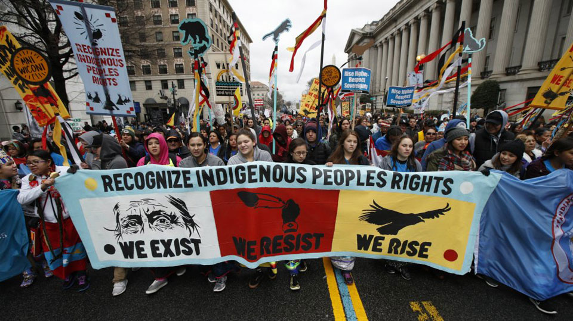
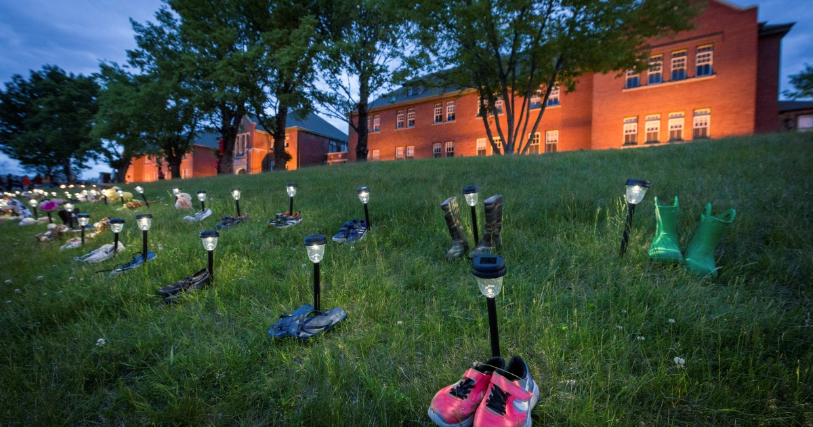

Indigenous Awareness Campaign
| No Longer Silenced |
Throughout history to our present day,
the Indigenous populace of Canada has been subjected to cruel iniquities.
The unjust actions of the government in the tragic Ipperwash case still
continue to echo in the events of recent years.
Unfortunately, the cycle of mistreatment persists,
from the Trans Mountain Pipeline to the uncovering of mass graves
containing the remains of Aboriginal children.
The public needs to be more aware and
knowledgeable of the past atrocities
committed by the government to prevent
them from occurring again.

| Trans Mountain Pipeline|
The Trans Mountain Pipeline is tasked with carrying crude oil from Alberta to the coast of British Columbia.
The building process ensued despite protests from several Indigenous groups.
The First Nations vehemently expressed their concern for the environment,
the Earth, and the negative effects of fossil fuel emissions as well as greenhouse gases. Ultimately, their concerns were left unheard.

“The land and sky will turn on you” if you disrespect the land.
The pipeline also trespasses on traditional land that still hasn't been
returned to the Indigenous peoples. It’s similar to
when the government intruded on the land of the Stony Point First Nation,
refusing to give back their land even decades after the war. Both these incidents
reflect the indifference the government has towards respecting and upholding past treaties and promises.
| Every Child Matters |
In 2021, a harrowing discovery was made on the lands of former residential schools. Ground-penetrating radars uncovered mass, unmarked graves of the remains of
Indigenous children who died at residential schools. These children were physically, psychologically, sexually, and spiritually abused at these institutions.
It was a cultutral genocide. Due to the neglect and horrendous mistreatment, as a result, many children perished at the hands of the government and the Church.
The bodies were buried on school grounds by the Church because it was cumbersome to transport the children back home and inform the parents of their deaths.

In the Ipperwash case, the government broke their promise to protect the burial grounds of the people of Stony Point First Nation.
The fact that these graves were only recently found prove that the government still doesn’t care about Aboriginal peoples burial sites and graves, which is terribly dehumanizing.
If the government did care, more funding and resources would’ve been allocated to locate every missing child.

In 2015, Prime Minister Justin Trudeau promised to implement the Truth and Reconciliation Commission’s calls to action.
Six of them deal specifically with creating a register of the missing children and mapping their graves.
| Resources |
This campaign is meant to raise awareness around the issues Aboriginal peoples face to this day
and shed light on past events such as the Ipperwash incident. Hopefully, the Indigenous community is
able to seek solace and support through this initiative. Discrimination still exists even in this new era, but the First Nations peoples
aren't alone. We hear your voices and this campaign stands alongside you.
https://www.canada.ca/en/services/indigenous-peoples.html
https://www.irsss.ca/about-us/governance
https://www.irsss.ca/about-us/governance
| No Longer Silenced|